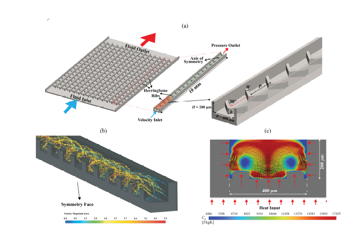

Journal article / 2026
Design of Herringbone Microchannels for Enhanced Mixing in Augmented Cooling Slurries
IEEE Transactions on Components, Packaging and Manufacturing Technology ·
How can microchannel geometry help a microencapsulated phase-change material (MEPCM) slurry use more of its latent heat? This numerical study explores herringbone ribs that generate secondary vortices, improve transverse mixing, and promote particle melting. Regression-based heat-transfer and friction correlations support multi-objective optimization with NSGA-II, balancing cooling enhancement against pressure drop.
View publication on IEEE Read the research explained
The mechanism / Illustrative animation
Forward flow. Cross-channel mixing.
Static view. Use Play schematic to start the illustrative motion.
Behind the results
Why mixing matters for phase-change cooling.
Adding a heat-absorbing material to a coolant is only part of the solution. The channel must also help that material reach the heat. This study connects coolant behavior, rib geometry, and pumping requirements rather than treating them as separate design choices.
How mixing spreads the wall's heat into the coolant
Cross-sectional views looking along the flow. In both views, coolant also travels downstream, out of the page. Heat enters through both sidewalls and the bottom wall; orange edges and inward arrows mark these heated surfaces.
Limited cross-channel transport
Heat still diffuses into the fluid, but weak transverse motion limits exchange with the interior. Near-wall fluid warms while some particles farther away receive less thermal exposure.
Herringbone-induced mixing
Secondary circulation exchanges fluid between the heated sidewalls, bottom, and channel interior. Relatively cooler return fluid absorbs heat as it passes these surfaces. This exchange spreads energy through more of the flowing slurry and renews the fluid next to the heated walls.
From fluid motion to better heat transfer
1. Renew the near-wall fluid. Cooler fluid arriving near the wall can sustain a steeper local temperature gradient, increasing heat transfer for a given wall-to-bulk temperature difference. Equivalently, a higher effective heat transfer coefficient can reduce the temperature difference needed to remove a fixed heat load.
2. Give more particles access to heat. Circulation changes particle thermal histories. If the PCM reaches its melting range and has enough time to absorb heat, some of the added energy melts the core rather than only raising its temperature. More stored enthalpy therefore does not necessarily mean a proportionally higher temperature.
3. Carry the absorbed energy downstream. Mixing redistributes heat; it does not destroy it. At steady state, with the same heat input to the coolant and the same mass flow, the bulk specific-enthalpy rise remains Q̇ / ṁ, neglecting other energy terms. The wall temperature and cross-sectional distribution can change even when that bulk energy rise is unchanged. A downstream heat exchanger must still reject the heat.
Mixing does not guarantee complete melting or a perfectly uniform temperature. The benefit depends on inlet state, residence time, geometry, and the additional pressure drop.
1. The problem: available latent heat is not always fully used
A microencapsulated phase-change material (MEPCM) slurry carries tiny capsules in a liquid. The material inside each capsule absorbs latent heat as it melts, in addition to the sensible heat absorbed as the coolant warms. The shell keeps the phase-change material contained.
That extra heat capacity is useful only when the particles experience suitable temperatures for long enough. With limited cross-channel transport, particles near a heated wall and those in the cooler channel interior can have different thermal histories. Simply adding more particles does not ensure that their melting capacity will be used effectively.
2. The mechanism: ribs move coolant across the channel
The angled herringbone ribs redirect part of the downstream flow into secondary, cross-channel motion. This circulation exchanges fluid between the wall region and the channel interior, improving transverse mixing and promoting particle melting.
The ribs are passive features: they have no moving parts, but they are not energetically free. They also resist flow. The design question is therefore not just how to strengthen mixing, but how much additional pressure drop is justified by the thermal benefit.
3. The method: numerical study, correlations, and optimization
The numerical study examines rib height and thickness, Reynolds number, and particle concentration. Reynolds number characterizes the balance of inertial and viscous effects in the flow; concentration changes how much phase-change material is carried by the slurry.
Regression correlations summarize the computed heat-transfer and friction behavior. NSGA-II, a multi-objective genetic algorithm, uses those relationships to search for trade-offs between heat-transfer enhancement and flow resistance. A Pareto trade-off means improving one objective requires sacrificing the other; it is not a single universally best design.
4. The findings: stronger heat transfer, with a hydraulic cost
The selected balanced numerical design has a heat transfer coefficient of 7.3 × 104 W/(m²·K) and a pressure drop of 37.9 kPa. A larger heat transfer coefficient indicates stronger heat exchange for a given area and wall-to-fluid temperature difference, using the study's definitions.
The reported enhancement is approximately 3.8× relative to straight microchannels with MEPCM slurry and 1.6× relative to herringbone microchannels with single-phase water. The first comparison changes the channel geometry; the second changes the coolant. These are distinct baselines, not interchangeable performance claims.
Neither ratio means the device runs that many times cooler or uses that much less pump power. Hydraulic power depends on both pressure drop and volumetric flow rate; electrical input also depends on pump efficiency. The comparisons should not be interpreted as equal-pumping-power results.
5. The significance: design the channel and coolant together
The engineering takeaway is that latent-heat capacity and access to the heated region must work together. Herringbone geometry can help a slurry make better use of phase change, but its value depends on the operating conditions and the acceptable pressure-drop budget.
This is numerical research, not experimental validation of a production cooler. The correlations should stay within their fitted ranges. Hardware adoption would additionally require checking slurry stability, capsule durability, material compatibility, manufacturing constraints, and performance in a complete cooling loop; those are qualification needs, not results established by this visualization.
This explanation summarizes the study and provides engineering context. For model assumptions, parameter ranges, and comparison conditions, see the full IEEE publication.